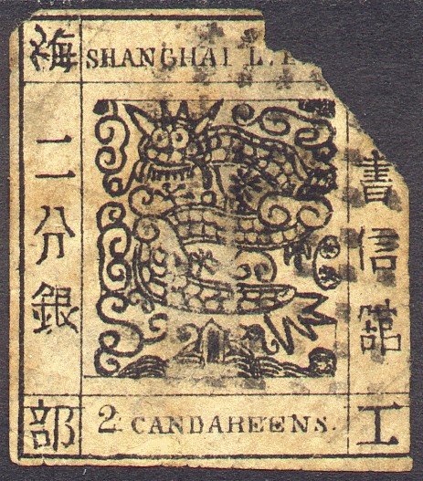
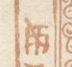
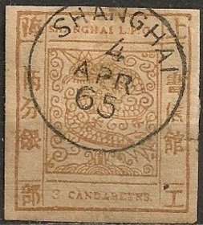
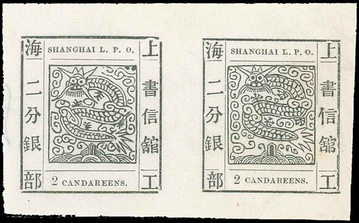

Examples of genuine stamps
Return To Catalogue - Shanghai large dragon issues, forgeries, part 2, fifth forgery etc. - Shanghai large dragon issues of 1865 - China
Shanghai is a port in China
Note: on my website many of the
pictures can not be seen! They are of course present in the
catalogue;
contact me if you want to purchase the catalogue.
Thanks to Wolfgang Balzer for providing useful information about the forgeries of this country.
Examples of genuine stamps
There exist many types and forgeries of these stamps (20 forgeries existed already in the early 20th century according to 'Album Weeds'). Already in 1874 Dr.Magnus warns for 2 different types of forgeries in 'Le Timbre Poste No. 134, page 16. The English numerals in the bottom label exists in so-called 'antique' or 'ordinary' style. The value inscription exists in 'CANDAREEN' or 'CANDAREENS'. I'm not quite sure that all the above stamps are genuine. The genuine stamps should have 7 bristles in the beard of the dragon according to Album Weeds. Note that the outer frame line is thick and broken in the corners. The vertical and horizontal frame in the inner of the stamp consists of of 8 thinner lines.

(look at the strange end of the tail of the dragon)
This is the eight forgery described in Album Weeds. There are many differences with the genuine stamps, such as the lowest part of the chinese character in the upper right corner is sloping downwards (in the genuine stamps it is sloping upwards). The letters 'HAN' of 'SHANGHAI' are joined at the bottom. Most vertical and horizontal lines are unbroken (in the genuine stamps many of these lines are broken). I've also seen the 8 Candareens green of this particular forgery type. This is one of the more common forgery types, I've only seen the value 2 CANDAREENS black.

The above forgeries are the third forgery described in Album Weeds: the 3 characters on the left hand side are the same for all values (they should be different), in the uppermost character, an oblique line can be observed (which is not present in the genuine stamps). There is an unbroken frameline around the central design. The curly ornament under the 'O' of 'L.P.O.' is broken. This seems to be the most common forgery.
I've seen the 6 candareens of this particular forgery in a sheet of 16 stamps (4 x 4). The '6' is placed slightly higher or lower depending on the position in the sheet.

I've seen the exact same sheet in color green as well.
Here with a 4-ring cancel as often used by the forger Oneglia.
Oneglia offers forgeries of these stamps, but he says they were
not made by him. Since he usually only sold cancelled stamps, I
presume he might have applied this cancel.



(Reduced size)
The above forgeries also have the 3 characters on the left hand side are the same for all values (they should be different). I have also seen the 6 cand green, the 6 cand brown, the 12 cand brown and the 16 cand red of the same forgery. The dot behind the "O" of "L.P.O." is placed too high. Note, the two different kinds of the "2" in the 2 cand value.
This forgery type was actually already shown in The Illustrated Catalogue of Postage Stamps by John Edward Grey from 1870 (or possibly copied from this image?).

Page from the Illustrated Catalogue of Postage Stamps by John
Edward Grey from 1870. However, the dot behind the "O"
is placed lower in this image. Exactly the same image appears in
the catalogue of Placido Ramon de Torres
"Album Illustrado para Sellos de Correo" of 1879, page
139 (information passed to me thanks to Gerhard Lang, 2016).
(Official imitation forgery)
(official imitation forgeries, reduced sizes)


1 Candareen pair of reprints. Two types of reprint side by side.
Another forgery (the 14th one described in Album Weeds) has the tail split up into 6 parts (it should be 5) and the beard hairs are joining into spikes at the end. There is also a very thick outline around the central design. It is also believed to be an official imitation made in 1874 (but from entirely new engraved center blocks).
The following information was send to me by Chris Rose:
This is an 'official re-issue' of 1871/2, though the basic conditions that apply to all large dragons (outer borders DO NOT meet at the corners; horizontal lines DO NOT cross vertical lines) still applies to the re-issues. The main difference in the re-issues is that the central dragon design has been modified slightly and the dragon's beard now has more bristles. Also, there are two versions of the dragons face, giving each value two different stamps. Only 1, 2 and 3 Ca stamps were re-issued....

A forgery of an official reprint. They exist in the values 1
Ca, 3 Ca, 6 Ca and 12 Ca (source Wolfgang Balzer). The design is
slightly different (and values of 6 Ca and 12 Ca were never
reprinted. For example the ears and horns are touching the line
above it.
Shanghai large dragon issues, forgeries, part 2, fifth forgery etc.


{kind=link}
{kind=link}